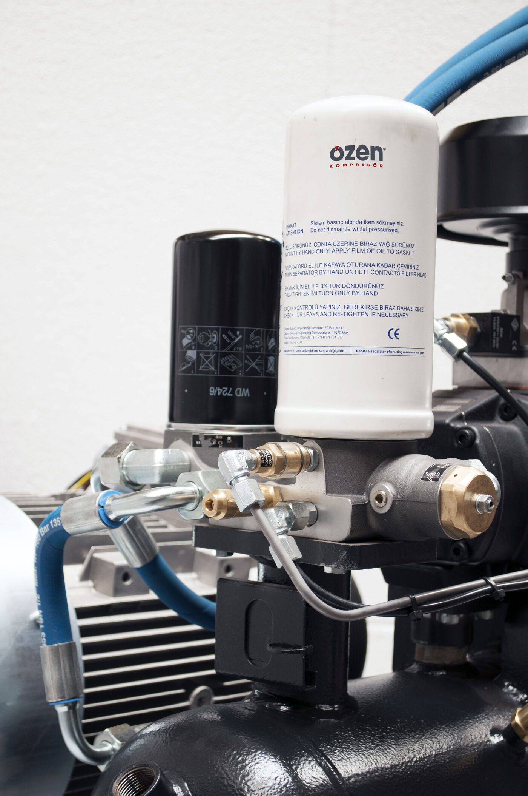
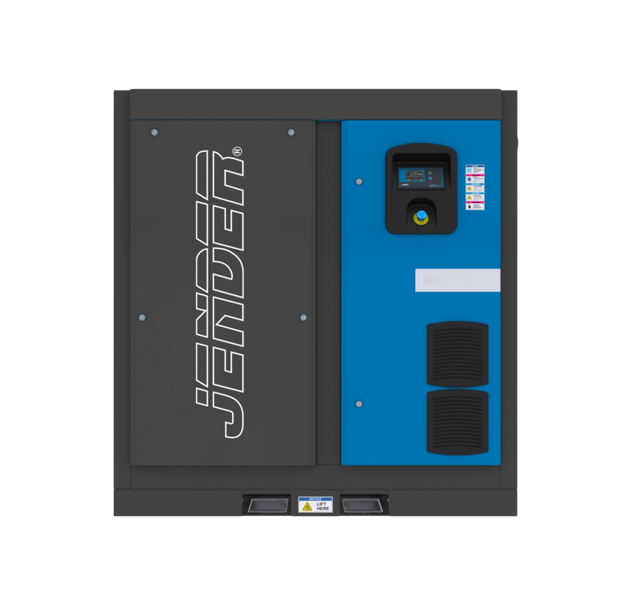

En JENDER desarrollamos sistemas de aire comprimido bajo especificaciones propias, pensados para responder a las necesidades reales de la industria. Definimos cómo es cada equipo —dimensionamiento, configuración y componentes críticos— para ofrecer máquinas eficientes, fiables y duraderas, con una elevada calidad del aire y un consumo energético contenido.
Trabajamos con plantas de producción continua, líneas automatizadas y procesos con exigencias de calidad de aire: alimentación, automoción, farmacia, carpintería industrial y metal. Partimos de tu perfil de consumo real —caudal punta, caudal medio, presión de trabajo y horas de funcionamiento— y dimensionamos la sala completa, no una máquina suelta.
Y lo que compras no termina en la máquina: Jender Ibérica responde del conjunto —equipo, instalación y disponibilidad— con CST Ibérica, la empresa de servicio técnico del grupo, detrás de cada puesta en marcha, cada revisión y cada aviso.


Cuando un compresor se para, lo caro no es la pieza: es la hora de producción perdida mientras se decide de quién es el problema. El equipo, la instalación y el mantenimiento suelen venir de tres manos distintas, y cada una señala a la siguiente.
Con Jender Ibérica tratas con una sola casa: Jender define y homologa el equipo y CST Ibérica lo instala y lo mantiene. Un único interlocutor de principio a fin, trabajemos contigo directamente o a través de tu instalador de confianza.
Un solo contrato, un solo teléfono y el respaldo de quien conoce cada máquina por dentro. Así es como entendemos el aire comprimido.
Si surge un problema, sabes quién responde.
El servicio técnico de tus equipos Jender lo presta CST Ibérica, la empresa de servicio técnico del grupo Jender Ibérica: técnicos propios, no una red subcontratada que cambia cada año.
Eso significa un solo interlocutor para el equipo, la instalación y el mantenimiento, y un historial técnico por número de serie que acompaña a tu máquina toda su vida útil.
Diagnóstico telefónico el mismo día y técnico en planta en 24 h laborables. Con contrato de disponibilidad, en 8 h.
Personal de CST Ibérica formado en la gama Jender, con recambios y herramienta específica en el vehículo.
Filtros, separadores, kits de mantenimiento y elementos compresores de la gama, en almacén propio.
Parte técnico con lecturas, piezas sustituidas y recomendaciones, archivado por número de serie.
No es una promesa comercial: es un contrato. Extendemos la garantía hasta 5 años en los compresores de tornillo cuando el equipo se mantiene dentro del programa de CST Ibérica, porque es la única forma de responder de una máquina que trabaja miles de horas al año.
| Qué hace falta | Por qué |
|---|---|
| Contrato de mantenimiento en vigor | Es lo que nos permite conocer el estado real del equipo y asumir el riesgo de los cinco años. |
| Revisiones en los intervalos del fabricante | Cada gama tiene sus horas de servicio. Nosotros las programamos y te avisamos antes de que venzan. |
| Intervenciones hechas por SAT oficial | Técnicos de CST Ibérica o SAT homologado, con el procedimiento y el par de apriete del fabricante. |
| Recambios y lubricantes originales | Un aceite equivocado degrada el elemento compresor: es la avería más cara y la más evitable. |
| Registro de cada intervención | El historial por número de serie es lo que documenta la garantía si hay que reclamarla. |
Alcance por gama, elementos cubiertos y exclusiones: consulta las condiciones de tu equipo con nuestro departamento técnico.
Un solo contrato, un solo responsable. Medimos lo que consumes de verdad, proyectamos la sala, la ejecutamos y la dejamos funcionando — y después la mantenemos.
Medimos caudal, presión y fugas durante un ciclo real de producción.
Dimensionado de sala, calidad de aire objetivo y cálculo del coste energético.
Sala de compresores, tratamiento de aire y red de distribución.
Ajuste de parámetros, pruebas de estanqueidad y formación a tu personal.
Contrato con CST Ibérica, revisiones programadas y garantía extendida a 5 años.
CST Ibérica trabaja como servicio técnico multimarca: puede hacerse cargo de tu sala aunque los equipos sean de otro fabricante.
El aire comprimido es una de las energías más utilizadas en la industria: cuando se para, se para la producción. Por eso el coste real de un compresor no termina en su precio: incluye la energía que consume, el mantenimiento que necesita y cada hora de parada. En Jender lo cuidamos todo, desde la configuración del equipo hasta la rapidez de la respuesta.
Equipos configurados para trabajo industrial continuo y dimensionados según tu consumo real.
Componentes críticos de fabricantes de reconocido prestigio, conforme a las normativas europeas.
Diseño accesible y repuestos disponibles para un mantenimiento rápido y económico durante toda la vida útil.
Red SAT nacional para diagnosticar, reparar y recuperar la operativa cuanto antes.
Accede a nuestro catálogo general para explorar todos los productos de la gama. Para detalles técnicos, visita el área de descargas (catálogos y fichas técnicas).
Únete a nuestra red de profesionales. Colaborar con nosotros te permitirá potenciar tu negocio y ofrecer a tus clientes las mejores soluciones del mercado.
Más información